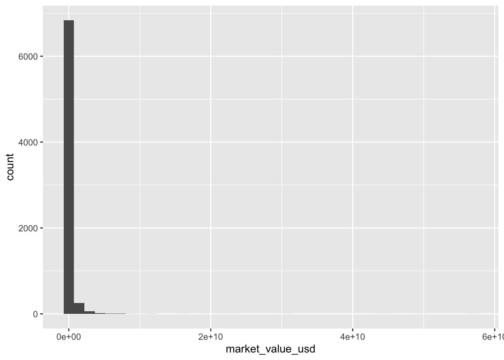
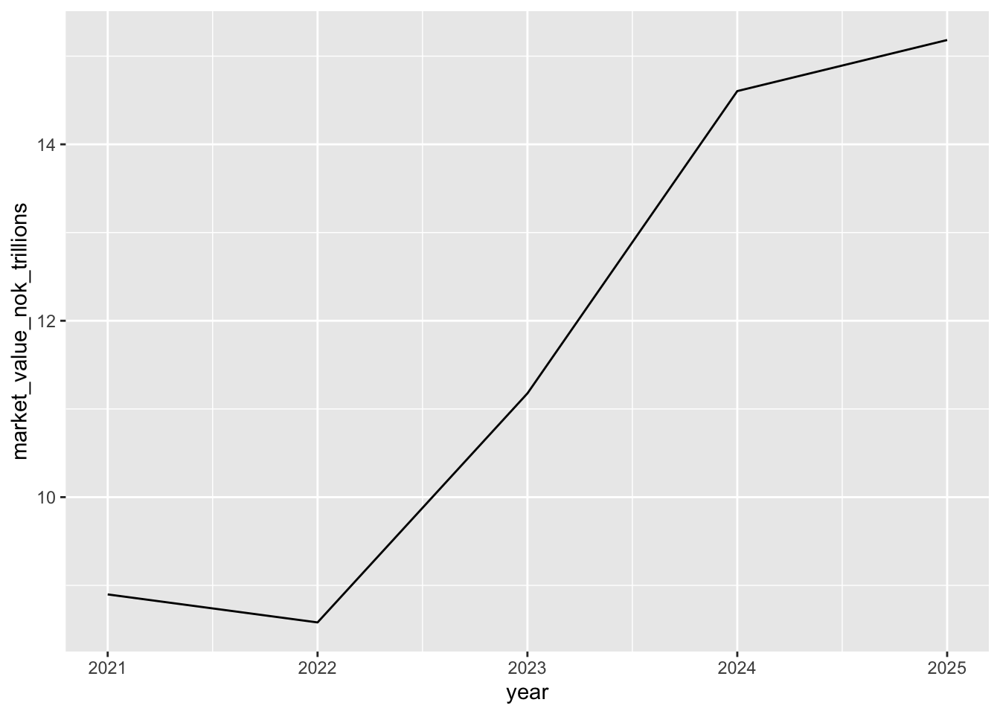
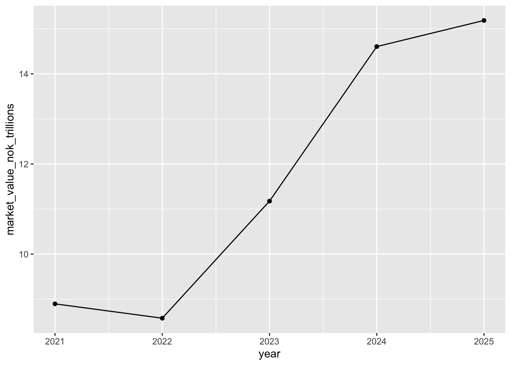
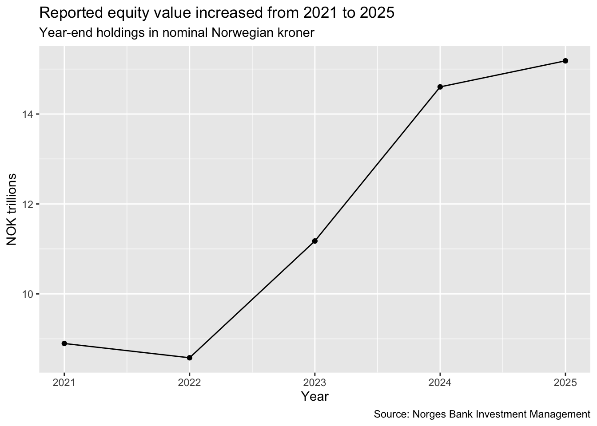
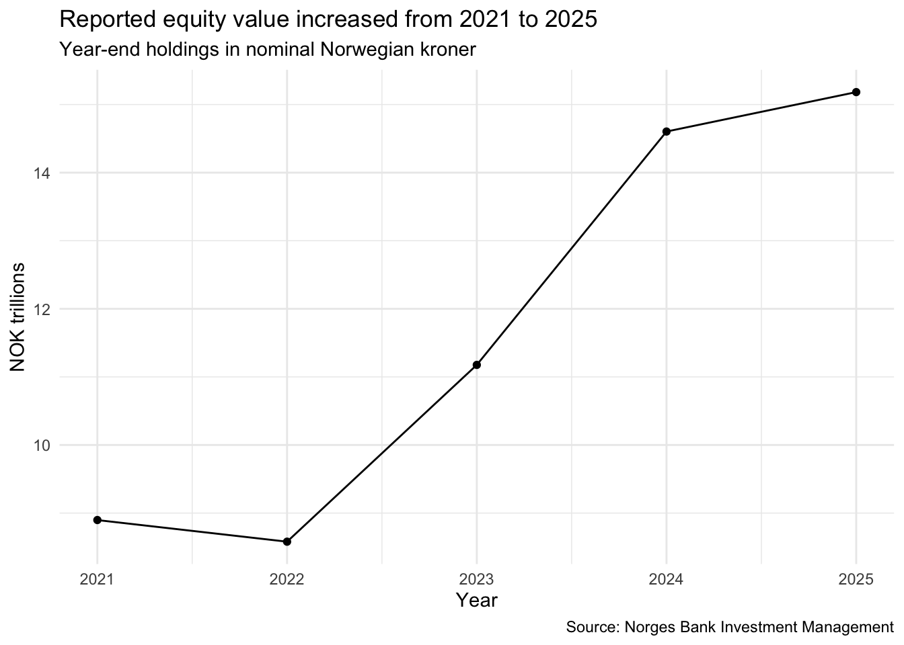

library(tidyverse)
library(scales)
gpfg <- read_csv(
"data/processed/gpfg_equities_latest.csv",
show_col_types = FALSE
)
latest_year <- unique(gpfg$year)10 Exploratory Visualization
10.1 Learning objectives
By the end of this chapter, you should be able to:
- choose a chart based on an analytical question;
- build and revise a
ggplot2graphic layer by layer; - use transformations when a distribution is highly skewed;
- identify outliers and groups that need further reporting; and
- distinguish an exploratory chart from a publication chart.
10.2 Explore before explaining
Exploratory charts help the reporter ask better questions. They can be dense, plain, and numerous. Publication charts are selective and designed around one clear takeaway. Do not decorate the first plot and call it a story.
10.3 The grammar of graphics
Every ggplot2 chart combines:
- data;
- aesthetic mappings such as x, y, color, or size;
- a geometry such as points, bars, or lines;
- scales that translate values into visual properties; and
- labels and a theme.
ggplot(gpfg, aes(x = market_value_usd)) +
geom_histogram(bins = 40)
The chart is technically valid, but a few very large holdings compress most observations near zero.
10.4 Inspect a skewed distribution
A log scale makes ratios visible across orders of magnitude:
ggplot(gpfg, aes(x = market_value_usd)) +
geom_histogram(bins = 45, fill = "#2C7FB8", color = "white") +
scale_x_log10(labels = label_dollar(scale_cut = cut_short_scale())) +
labs(
title = "Reported holding values span several orders of magnitude",
subtitle = paste0("Each bar counts equity-holding records in the ", latest_year, " snapshot"),
x = "Market value in US dollars (log scale)",
y = "Holding records",
caption = "Source: Norges Bank Investment Management"
) +
theme_minimal()
The log transformation changes the spacing, not the underlying data. State it in the axis label because many readers interpret horizontal distance as an ordinary additive difference.
Zero and negative values
A log scale cannot display zero or negative values. The latest-year teaching file has positive market values, but the full historical archive contains negative records in 2005–2008. Always check the range before adding a log scale.
10.5 Compare distributions across groups
Boxplots summarize the median, middle half, and more extreme observations. They do not show the total size of an industry.
industry_order <- gpfg |>
summarise(
median_value = median(market_value_usd),
.by = industry
) |>
arrange(median_value) |>
pull(industry)
gpfg |>
mutate(industry = factor(industry, levels = industry_order)) |>
ggplot(aes(x = market_value_usd, y = industry)) +
geom_boxplot(outlier.alpha = 0.25, fill = "#9ECAE1") +
scale_x_log10(labels = label_dollar(scale_cut = cut_short_scale())) +
labs(
title = "Typical holding values differ across industries",
x = "Market value in US dollars (log scale)",
y = NULL,
caption = "Source: Norges Bank Investment Management"
) +
theme_minimal()
Use the chart to identify industries for closer reporting. Do not infer that a higher median means an industry is safer, more profitable, or preferred.
10.6 Explore a relationship
ggplot(
gpfg,
aes(x = market_value_usd, y = ownership_pct, color = region)
) +
geom_point(alpha = 0.45, size = 1.3) +
scale_x_log10(labels = label_dollar(scale_cut = cut_short_scale())) +
labs(
title = "Large holdings do not always represent large ownership stakes",
x = "Market value in US dollars (log scale)",
y = "Ownership (%)",
color = "Region",
caption = "Source: Norges Bank Investment Management"
) +
theme_minimal() +
theme(legend.position = "bottom")
The point cloud helps locate exceptions: high ownership with modest market value, or very high market value with a relatively small stake. Those points are reporting leads. Look them up before labelling them.
10.7 Use small multiples for comparison
largest_regions <- gpfg |>
summarise(total_usd = sum(market_value_usd), .by = region) |>
slice_max(total_usd, n = 4, with_ties = FALSE) |>
pull(region)
gpfg |>
filter(region %in% largest_regions) |>
ggplot(aes(x = market_value_usd)) +
geom_histogram(bins = 30, fill = "#2C7FB8", color = "white") +
scale_x_log10(labels = label_dollar(scale_cut = cut_short_scale())) +
facet_wrap(~ region, scales = "free_y") +
labs(
title = "Holding-value distributions vary across the largest regions",
x = "Market value in US dollars (log scale)",
y = "Holding records"
) +
theme_minimal()
scales = "free_y" makes the shape within each region easier to see, but bar heights can no longer be compared directly across panels. If absolute counts are the story, use a common y-axis.
10.8 An exploratory chart audit
After every chart, ask:
- Does the chart’s grain match the question?
- Are zeros, missing values, or negative values omitted?
- Is the axis transformed or truncated?
- Does color encode a variable or merely decorate?
- Would a table communicate the exact values more clearly?
- Which point, bar, or pattern needs reporting outside the dataset?
10.9 Independent task
Create three exploratory charts about one region:
- a distribution;
- a comparison across industries; and
- a relationship between two numeric variables.
For each chart, write one sentence describing what you learned and one sentence describing what the chart cannot establish. Select only one chart to develop into a publication graphic in the next chapter.